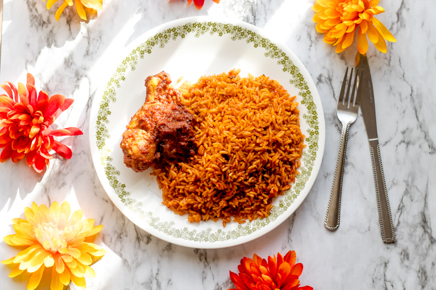

Jollof Rice Recipe

Party Jollof Rice Recipe
Celebration in an African home CAN NOT happen without the presence of Jollof rice.
Jollof rice is a very common dish prepared in many African countries and each recipe differs depending on the
nation.
I specifically prepare the Nigerian party jollof rice which I still feel is one of the best recipes out there
Party jollof rice is commonly the most sort after type of rice, because of its very unique taste. Most people
feel the unique taste comes from preparation using firewood,
but that isn’t always necessarily the case.
Ingredients
- 4 tbsp canola oil
- 1 tbsp butter
- 14.5 oz canned hunts tomato unsalted
- 2 red bell peppers
- 6 oz canned tomato paste
- 3 large whole red onion
- 1 cup chopped red onion
- 1/4 cup blended crayfish
- 4 Habanero peppers (based on how spicy you want)
- 4 1/2 cups long grain parboiled rice
- 2 cups chicken stock
- 1 tbsp Maggi or knorr cubes
- 1 tbsp salt
- 1/2 tsp cayenne pepper and black pepper
- 1/2 tsp white pepper
- 3 single bay leaves
- 1/2 tbsp curry powder
- 1/2 tsp garlic/onion powder
- 1/2 tsp thyme
- 1/4 tsp ginger
Recipe instructions Step | COOK & PREP TIME: ~ 1 hour 15min
- Blend tomatoes, red bell peppers, habanero peppers, large red onions until consistency is smooth and set aside
- Wash the rice thoroughly to rid off starch and set aside.
- To a medium-sized pot on medium heat, heat canola oil and butter.
- Throw in chopped onions and allow to fry for about 5 mins or until redness starts to fade
- Pour in tomato paste and allow to fry for about 10-15 minutes, stirring continuously to avoid burning.
- Add in your blended mixture, crayfish, Maggi, cayenne & black pepper, white pepper, bay leaves, curry powder, garlic, thyme. Mix and fry for about 30 minutes, continuously stirring to avoid burning.
- Add chicken stock and salt. Mix and allow cook for an additional 10 mins
- Add in washed rice and a bit of water (if necessary), and reduce heat to low.
- Cover pot with aluminum foil, to avoid heat from escaping through lid
- Cook rice on low heat for about 30 mins
- Once cooked, mix thoroughly to combine ingredients
- Cover and let cook for an additional 10 mins.
- To get the party Jollof flavor, turn up the heat and let the rice burn for about 3 mins. (Be careful with this step, so you don't burn the whole rice)